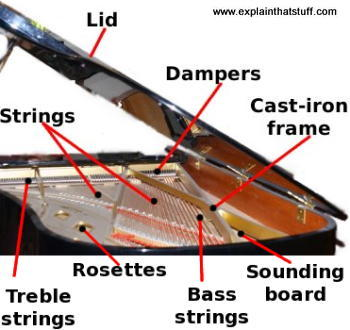
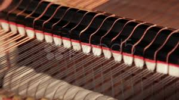

The Action of the Keys
A piano sounds quite unlike any other instrument and, if you heard it on the radio, you'd probably never guess how it was making a noise. The confusing thing about a piano is that it's two different kinds of instrument in one: it's a string instrument cause the sounds are made with strings, but it's also a percussion instrument (like a drum) because the strings make sounds when something hits them. The key is actually a wooden lever, a bit like a seesaw but much longer at one end than at the other. When you press down on a key, the opposite end of the lever (hidden inside the case) jumps up in the air, forcing a small felt-covered hammer to press against the piano strings, making a musical note. At the same time, at the extreme end of the lever behind the hammer, another mechanical part called a damper is also forced up into the air. When you release the key, the hammer and the damper fall back down again. The damper sits on top of the string, stops it vibrating, and brings the note rapidly to an end.
The Shape of The Instrument and its Sound
If a piano consisted of nothing but an action—the mechanical connection between keys and strings—no-one in the audience would hear very much. So there are lots of other parts in a piano designed to make notes sound louder or last longer. The strings of a piano stretch out horizontally away from the pianist sitting at the keyboard, just as though a piano were a guitar laid flat on its back.when you pluck a string, it vibrates, sets air molecules in motion and sends the sounds of the strings out toward your ears. To make the sounds louder, there is a large piece of wood mounted underneath them, called the soundboard (or sounding board). When the strings vibrate, the soundboard also vibrates in sympathy (resonance), just as a wine glass vibrates when a soprano sings a high note nearby. The soundboard effectively amplifies the strings so they are loud enough to hear. The lid helps the audience too: sound from the strings and the soundboard travels straight up, hits the lid, and reflects out toward the audience. That's why it's always better to sit on the right of the pianist and why concert hall seats to the left of (and behind) the pianist are generally much cheaper.

How about the Pedals?
While the 88 keys on a piano control the musical notes that the pianist can make, the three pedals determine how loud or soft these notes are and how long they last. The pedal on the left is called the soft pedal. Most of the keys on the keyboard hit two or three strings simultaneously when you press them, so you get a richer and louder note. However, if you press the soft pedal down, the hammers that play the notes shift slightly to one side so they contact fewer strings—making a quieter note. The middle pedal is called the sostenuto pedal: when you press it down, it temporarily deactivates the dampers for the notes that you're playing at the time, and makes them last quite a bit longer. The pedal on the right is called the sustaining pedal. Pressing it down raises all the dampers up in the air so all the notes last longer.

Source= This Website Right Here!